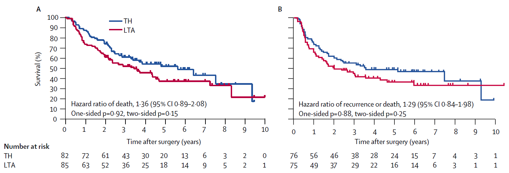

generate_data <- function(n=200, hr1, hr2) {
stoma <- rbinom(n, size = 1, prob = 0.4)
sex <- rbinom(n, size = 1, prob = 0.5)
age <- rnorm(n, mean = 65 + 3 * stoma, sd = 8)
hazard_relapse <- ifelse(stoma == 1, hr1*0.10, 0.10) # 再発のハザード（大きいほど早く起こる）
hazard_death <- ifelse(stoma == 1, hr2*0.10, 0.10) # 死亡のハザード（大きいほど早く起こる）
hazard_censoring <- 0.05 # 打ち切りハザード（群に依存しない）
t_relapse <- rexp(n, rate = hazard_relapse) # 再発までの潜在時間
t_death <- rexp(n, rate = hazard_death) # 死亡までの潜在時間
t_censoring <- rexp(n, rate = hazard_censoring) # 打ち切りまでの潜在時間
## --- 全生存期間（OS） ----------------------------------------
time_os <- pmin(t_death, t_censoring)
status_os <- as.integer(t_death <= t_censoring) # 1 = 死亡, 0 = 打ち切り
## --- 無再発存期間（RFS） -------------------------------------
time_rfs <- pmin(t_relapse, t_death, t_censoring)
status_rfs <- integer(n)
status_rfs[time_rfs == t_relapse & time_rfs < t_censoring] <- 1 # 再発
status_rfs[time_rfs == t_death & time_rfs < t_censoring] <- 1 # 死亡
## --- 累積再発率（CIR） + 競合リスク --------------------------
time_cir <- pmin(t_relapse, t_death, t_censoring)
status_cir <- integer(n)
status_cir[time_cir == t_relapse & time_cir < t_censoring] <- 1 # イベント1: 再発
status_cir[time_cir == t_death & time_cir < t_censoring] <- 2 # イベント2: 競合リスクとしての死亡
## --- データフレームにまとめる --------------------------------
dat <- data.frame(
id = 1:n,
sex = factor(sex, levels = c(0, 1), labels = c("WOMAN", "MAN")),
age = age,
stoma = factor(stoma, levels = c(0, 1),
labels = c("WITHOUT STOMA", "WITH STOMA")),
time_os = time_os,
status_os = status_os,
time_rfs = time_rfs,
status_rfs = status_rfs,
time_cir = time_cir,
status_cir = status_cir
)
}P-Value Explanations That Seem Plausible at First Glance
臨床試験で生まれるp値の真の意味は？仮想的な反復という頻度論の発想を、会話を通して確認するcoffee-chat guide。p値の直感を育てる一編です。

Frequentist Thinking II − P-Value Explanations That Seem Plausible at First Glance
Keywords: clinical trial, language & writing, p-value, survival & competing risks
生存曲線とハザード比
私「お父さん、コーヒーもう一杯、淹れ直したよ。続けてJCOG9502のハザード比について教えてよ」
お父さん「あつつ。それは図Aのhazard ratio of death 1.36、図Bのhazard ratio of recurrence or death 1.29についてだね。どちらもKaplan-Meier曲線の違いを要約していて、LTA群よりTH群の方が予後がよかったことを表している。ハザードが高いってことは、Kaplan-Meier曲線が下がりやすいっていう意味だからね。大事なのは、図Aの全生存期間（OS）、図Bの無病生存期間（DFS）のどちらも、ハザード比で要約しやすい形状をしていることかな」

私「要約しやすい？」
お父さん「うん。どちらの図でもTH群のKaplan-Meier曲線が、きれいにLTA群の上にあるでしょ、右端の人数が4人しかいないところでは交差しているけど。ハザード比は、2本の生存曲線が、ハザードのスケールで比例関係にあることが前提なんだ。ハザード比の基準は書かれていないけど、TH群を比の分母にとっている。この関係を、Cox回帰（Cox regression）とか比例ハザードモデル（proportional hazards model）って呼ぶんだ」
私「比例関係だったら交差したらまずいよね」
お父さん「そういうこと。それに、OSとDFSの結果が一貫している。これもすごく素直な結果だよね。解釈しやすい。後でRを用いたCox回帰をみせるよ」
私「ありがとう、後でね。それよりさ。この図のハザード比は1.36と1.29だよね。ハザードが高いほどKaplan-Meier曲線が下がる、比の分母はTH群だっけ。ということは、ハザード比が1より大きいと、TH群よりLTA群の方がOSやDFSの成績が下がるんだよね？あと、p値は0.05より小さいと統計学的に有意なんでしょ。つまり、LTA群の方が、治療成績がわるかったけど、p値をみると2群に有意差はないんだよね」
お父さん「そういうことだね。ハザードは死亡や再発が起きるスピードを表していて、ハザード比はその2群間の“比”だから」
p値に関する一見正しそうな説明
お父さん「p値の正確な意味は誤解されてることが多いんだよ。論文を読むときの注意点としては、まず、試験によってはp値と比べる基準（有意水準）が5%でないかもしれないってこと。たとえば中間解析（interim analysis）とか。論文の抄録を読んでごらん。実はJCOG9502では最終解析の前に、中間解析をする計画になっていて、この論文はそのとき早期中止になった結果を報告しているみたいだよ。中間解析では、5%より低い有意水準で検定するのが一般的なんだ」
私「じゃあ有意差がついたから早期中止したってこと？」
お父さん「いや、この試験が早期中止した理由は、有意差がついたからではなく、LTA群が有意に勝つ見込みがないと、効果安全性評価委員会が判断したためだね。他にも誤解はいくつもある。これをみてよ」
- p値は帰無仮説（null hypothesis）が正しい確率である
- p値が小さく、統計学的に有意であることは、科学的に重要な知見が得られたことを意味する
- 統計学的に有意でない結果とは、帰無仮説が正しいので採択すべきという意味である
お父さん「JCOG9502の場合、帰無仮説は”LTA群の全生存曲線は、TH群の全生存曲線と等しい”ってことだよ。このp値に関する説明のうち、まず1について聞くね。JCOG9502のp値は、”LTA群とTH群の生存曲線に差がない確率”を意味すると思う？」
私「黒板くさくなってきた。統計の教科書って私がいったの、地雷だったか？まあ、1はそれでいいんじゃない？p値が0.05だったら100回に5回は正しい」
お父さん「ここではね、言葉を正確に選んで考えてみてほしいんだ。“生存曲線に差がない”っていう命題や仮説は、確率変数かな？確率変数ではないよね。命題は、正しいかどうかのどちらかしかないもの。確率変数ではないのに、確率が定義されるのは学問的におかしい」
私「はーん。そういう理屈っぽいことがいいたかったわけね。じゃあそういう言い回しはやめます」
お父さん「うんうん。じゃあ100回に5回ってどういう意味でいった？」
私「へ。言葉通りだけど？JCOG9502を100回やったらどうなるかって意味」
お父さん「その通り。同じ試験を100回繰り返したらp値が100個出てくるでしょ。これがこの場合の確率の定義なんだ。頻度論的確率（frequentist probability）とかいうね。じゃあ確率の意味の次は、p値の解釈。p値が小さいことは、“科学的に重要な知見が得られたこと”を意味すると思う？」
私「普通そう考えるんじゃない？」
お父さん「でもさっきの図のp値を見てよ。p=0.15からp=0.92まで4つのp値が示されているけど、どれも小さくはないでしょ」
私「うん」
お父さん「じゃあ科学的に重要じゃないってこと？」
私「そういう意味でいったわけじゃないけど」
お父さん「だよね。p値が小さい方が重要な研究結果だって考えがちだけど、それははっきりとした間違いだと考えてください。論文を読むとき、p値に注目すると見方が偏ってしまう」
私「はいはい。お父さん、話長くない？」
お父さん「三つ目の説明“統計学的に有意でない結果とは、帰無仮説が正しいので採択すべきという意味である”まで考えようよ。これは正しい？」
私「教科書かなにかで、p値は、仮説を棄却するためのもので、採択しちゃだめって読んだ気がする。この最後の説明も、やっぱり間違いなんでしょ、空気でわかる。でもさ、実際問題として、有意差がつかなかったらどうなるの？たとえば実薬AとBを比較する臨床試験だったとして、AとBの効果は同等と結論に書いていいの？」
お父さん「それはルール違反だよ。この問いは、そういう間違いをさせないために出したんだ。帰無仮説が正しいことは、AとBの効果は同等っていう意味になるけど、有意差がないからって、それを採択してはいけない。“同等”や“劣らない”という結論を出すには、同等性 （equivalence）試験や非劣性 （non-inferiority）試験を組む必要がある」
私「やっぱりね。そう思ったけど、はっきりいってくれて納得だわ」
お父さん「この区別はルールに組み込まないとまずいことを歴史が証明している。これはもう30年ほど前の日本の話なんだけど。昔、薬事承認の根拠として非劣性試験を国が求めていた時代があってね。その時代の経験を踏まえると、研究仮説と統計的な判断基準の関係は、厳密に考えとかないとちょっとまずいと思うんだ」
標準規格としてのp値
私「教科書的な説明は、それはそれでいいんだけどさ。なんだか、現実とギャップを感じるよ、私は。2の”p値が小さいと科学的に重要”についてなんだけどね。そうはいっても基礎研究だと、有意差がつかない結果はいまいち扱いじゃない？それが現実だと思う。でもJCOG9502は違うのもわかる。LTAの有効性が示されたわけでも、術式が同等ってわかったわけでもない。でもどうしてLancet Oncologyに載るほど評価されたんだろう」
お父さん「ん？有意差がつかない臨床試験結果に価値がないとは思わないけど。臨床試験って、技術の性能評価が目的じゃない？手術や薬といった医療技術のね。有効性が示されるかどうかに関わらず、評価が定まったということに変わりはないよね」
私「…ネガティブ試験でも価値が変わらないってことをいってるよね？」
お父さん「うん。たとえるならさ、臨床試験はペーパーテストと同じ”試験”ってことだよ。合格・不合格と試験成績という情報の価値は無関係でしょ。さっき話したp値に関する説明は、採点ルールや試験の”標準規格”みたいなもので避けて通れないんだ。まあ、点数がすべてじゃないけどね」
私「臨床試験は技術を評価するのが目的ってこと？科学的発見じゃなくて？」
お父さん「うん。臨床試験が行われてきた文脈は、技術評価の制度の中だったといえると思うよ。p値の使い方や、有効性エンドポイントの定義の標準化も、“試験の規格”を一定に保つための工夫だった。古い話だけど、製薬企業が承認取得のために行う臨床試験って、90年代はまだ各国の共通ルールがなかった。90年代後半になって、米国、欧州、日本の規制当局が集まってICHガイドラインという臨床試験の標準規格を決めたんだ」
私「それは医師主導臨床試験じゃなくて治験だよね。お父さんさ、やっぱり臨床試験はパラダイムシフトを起こしてない？殺細胞薬、抗PD-1、ADC。あれを”技術評価”って呼ぶのは、あんまり納得いかないな」
お父さん「それは技術評価の結果が科学を刺激しただけじゃないかなあ」
私「お父さんって、技術と科学を区別したがるね。まあ、企業治験は技術評価のくくりでも私はいいよ。でも、科学の営み全体をみたとき、臨床試験はその一部だと思う。結果が仮説を更新して、次の問いを生む。私はそれを科学って呼びたい」
ホパテの悲劇
脳循環改善薬という古い薬をご存知でしょうか？この薬はかつて脳血管障害の後遺症や認知症などに使われ、累計8,000億円ほどの売上げがあったようです。脳循環改善薬にはいくつかの類似薬がありましたが、そのほとんどが、最初に承認されたホパンテン酸カルシウム（販売名ホパテ）と比較した「非劣性試験」を根拠に承認されていました。しかし当時行われていたのは、正式な非劣性の解析ではなく、「ホパンテン酸カルシウムと比べて有意差がない」ことにもとづいて非劣性を判定していました。1989年にホパンテン酸カルシウムは副作用のため市場から撤退しました。同時期に、厚生省（当時）は製薬企業にプラセボ対照試験による再評価を求めました。その結果、脳循環改善薬は、すべてプラセボに勝てなかったのです（厚生省医薬安全局1998）。この悲劇は、有意差がつかなかったとき、同等や非劣性と結論するのは間違いであることをはっきり示しています。
coxph()を用いたハザード比の推定
ハザード比を推定する方法はいくつかありますが、もっともポピュラーなのはsurvivalパッケージのcoxph()です。以前のエピソードでは、関数generate_data(hr1, hr2)を用いて、ストーマの有無やOSのデータを生成しました。今回は同じデータにCox回帰を当てはめ、ストーマあり群とストーマなし群のハザード比を計算してみます。generate_data(hr1, hr2)では、死亡ハザード比の真値はhr2という引数で指定できます。
generate_data()のコードはこちら（データ生成に使用）
coxph()のコードと結果はこちら
# install.packages("survival") #インストールが必要なら実行
library(survival)
dat <- generate_data(hr1=2, hr2=1.5) #再発ハザード比2, 死亡ハザード比1.5のデータ生成
fit <- coxph(Surv(time_os, status_os) ~ stoma, data = dat)
summary(fit)Call:
coxph(formula = Surv(time_os, status_os) ~ stoma, data = dat)
n= 200, number of events= 136
coef exp(coef) se(coef) z Pr(>|z|)
stomaWITH STOMA 0.6323 1.8819 0.1810 3.492 0.000479 ***
---
Signif. codes: 0 '***' 0.001 '**' 0.01 '*' 0.05 '.' 0.1 ' ' 1
exp(coef) exp(-coef) lower .95 upper .95
stomaWITH STOMA 1.882 0.5314 1.32 2.683
Concordance= 0.557 (se = 0.025 )
Likelihood ratio test= 11.95 on 1 df, p=5e-04
Wald test = 12.2 on 1 df, p=5e-04
Score (logrank) test = 12.58 on 1 df, p=4e-04文献
Sasako M, Sano T, Yamamoto S, Sairenji M, Arai K, Kinoshita T, Nashimoto A, Hiratsuka M, Japan Clinical Oncology Group (JCOG9502). Left thoracoabdominal approach versus abdominal-transhiatal approach for gastric cancer of the cardia or subcardia: a randomised controlled trial. Lancet Oncol 2006;7(8):644-51